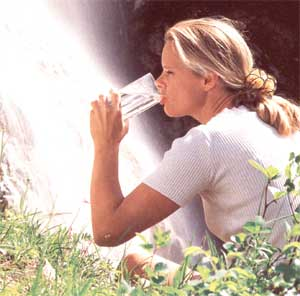
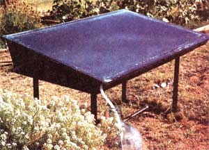
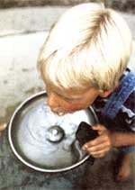
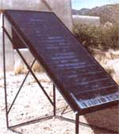
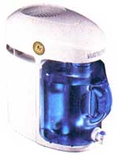
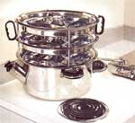
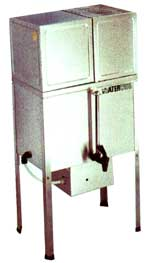

Americans worried about the purity of their well or tap water often end up spending a small fortune on bottled water just to be safe. But bottles aren't the only solution. For those who want to produce their own pure drinking water, passive-solar distillation is an inexpensive, low-tech option.
Distilling and reverse-osmosis filtering are the two best methods for purifying water. Both approaches remove more contaminants than activated carbon filters do. The U.S. Environmental Protection Agency says only reverse-osmosis systems and distillers may be called water "purifiers." All other systems are water "treatment" devices, in spite of the performance claims many manufacturers make. But reverse-osmosis filtration wastes water: For every gallon of purified drinking water produced, the process consumes 2 to 4 gallons of water. In contrast, solar distillation wastes no water and is powered by the sun. instead of removing specific contaminants, as filtration systems are designed to do, solar distillation purifies water by removing only one thing: water.
Distillation takes advantage of the principle that chemicals vaporize at different temperatures. Most potential chemical contaminants in drinking water have vaporization points higher than water. When untreated water is heated in a solar distiller, pure water vaporizes first, leaving contaminants behind.
A simple solar distiller removes salts, heavy metals and bacteria, as well as arsenic and many other contaminants. According to a paper by Horace McCracken, a leader in solar distiller design, laboratory tests show distillers can remove trichloroethylene (a dry-cleaning chemical) and nitrates. Both are common pollutants and suspected carcinogens. A simple solar distiller paired with a carbon finish filter which removes any residual chlorine byproducts, will give you the cleanest drinking water for the least expense.
Solar distillers work by mimicking the natural water cycle: The sun provides energy to warm the water, the water evaporates (forms clouds) and condenses (makes rain) when it meets a cooler surface. Unlike electric distillation, boiling is not required for solar distillation. Some people believe water from a solar distiller is purer than boiled water. Florida Solar Energy Center principle research scientist W.R. McCluney, Ph.D., says vigorous boiling "can force unwanted residue into the distillate (distilled water), defeating purification."
The simplest solar distiller is a singlebasin distiller-a rectangular, black box fitted with a piece of angled glass sealed to the top. The basin is filled with untreated water; as the sunlight penetrates the glass, the water warms and evaporates, leaving most contaminants behind. The temperature difference between the cover, which does not absorb much heat, and the water surface causes the water vapor to condense, forming a thin film on the underside of the cover. When enough water condenses, it runs down the cover to a collection trough. Simple single-basin distillers work best on flat, level surfaces, and can be constructed fairly easily.
The other common type of solar distiller is the multibasin distiller. Also known as inclined solar distillers, multibasin distillers use numerous small basins to produce a greater amount of distillate during the day. These distillers generally can be transported easily and may be more suitable for temporary dwellings. Due to the amount of latent heat stored in one large basin of water, singlebasin distillers continue producing distilled water at night, and thus are as efficient as multibasin distillers.
All basin distillers have four major components: a basin, a support structure, a clear cover (usually tempered glass) and a distiller trough. Most distillers also include insulation, sealants, piping and valves. Volunteers in Technical Assistance's booklet Understanding Solar Distillers offers a wealth of recommendations for building your own distiller. (For more information see "Distiller Sources")
The total amount of surface area determines the yield of the solar distiller. Dennis Lemon, author of Pure Water Nature's Way (see "Distiller Sources"), says on a sunny day, for every 1,000 square inches of cover surface, the solar distiller will produce about 1 gallon of pure water. An efficient 4-by-8foot distiller should yield 2 to 4 gallons
With the sun's energy, this simple single-basin, passive-solar distiller can produce up to 4 gallons of purified drinking water per day of pure water on a sunny day. A solar water distiller will make potable water day after day, season after season.
A study by New Mexico State University shows solar-distilled water costs less than 7 cents per gallon, based on the conservative estimate of a 10-year distiller life span. Quality bottled water can cost as much or more than gasoline. Many American families spend more than $250 per year on bottled water, says Michael Cormier of SolAqua, a solar distiller distributor. Electric distillers, which consume about 3 kilowatt hours per gallon of water, will yield good water, albeit energyintensive and more expensive, at about 30 cents per gallon.
About $400 will buy a small solar distiller that will produce 2 to 6 quarts of drinking water per day, depending on weather conditions. A larger solar distiller, selling for about $800, will produce up to 2 gallons per day, or 770 gallons per year After just one year of production, that's only a little more than a dollar per gallon. The cost will drop every subsequent year of operation. With no mechanical parts to wear out, a solar distiller is long-lived. A little cleaning maintenance is all that's needed to provide potable water for decades.
Unless you've automated your system (discussed below), you'll have to fill your distiller with source water and collect the distilled water on a daily basis. This can be an enjoyable routine or a confounding chore, depending on your lifestyle and time constraints.
Many people use subsystems to automate filling the distiller and storing the distilled water. A simple cyclical timer and solenoidactuated valve can be set to automatically fill the distiller To reduce the amount of electricity needed to power the subsystem, use a valve with a normally closed actuator. Without power supplied to the solenoid, the valve remains closed to water flow.
Besides automatic filling, it's handy to have pure water delivered to your tap. A gravity-fed system, in concert with a rooftopmounted distiller and a storage tank, can serve this function. if your roof is unable to support a distiller's weight, you can place your distiller on a ground-mounted frame, and a small pressure pump can route water directly to your kitchen faucet.
As water evaporates in the distiller it leaves minerals and other contaminants in the basins. To ensure optimal performance, flush the system out periodically and keep the glass cover clean.
If you five in a climate where freezing is a concern, you will need to take some extra precautions to protect your distiller and subsystems. Insulate your inlet and outlet lines. Besides insulation, Lemon says gravity is the best protection against freezing. Locate your water-distribution system components and automatic-fill system below the distiller to avert potential freeze disasters. When there's no more sunlight to warm the distiller, an automatic controller can turn off the circulating pump, allowing the water to drain back into an indoor storage tank.
Distilled water is a strong solvent, so choose your storage containers carefully. Stainless steel (Type 316) containers, and glass bottles and carboys (larger containers) are best. Avoid storing distilled water in soft plastic containers. Many plastics give off toxins, such as methyl chloride, a carcinogen that can leach into water. Design your storage capacity to contain four to five times the average output of the distiller, so you'll always have clean water on hand.
Although solar distillers are best from an energy and economic standpoint, some situations may not accommodate solar distillers: You may be an apartment dweller or have a perennially shaded yard. Those who still want pure, distilled water can choose from a variety of electric distillers on the market.
Electric distillers work similarly to solar distillers, but rely on electricity rather than solar power. Small countertop distillers, which cost $150 to $350, can produce about 1 gallon of distilled water in four to six hours. Larger floor models, which can cost $1,000 or more, produce about 9 gallons of pure water per day. These units can be connected directly to your water system to provide pure drinking water on demand, eliminating the need for manual filling.
Waterwise (see "Distiller Sources") also makes a distiller that can be used over an open fire, or on a woodstove, gas grill or stove top. At $379, it can provide up to 16 gallons of drinking water in a 24-hour period.
Although the U.S. Environmental Protection Agency requires water utilities to monitor and keep the levels of 80 potential contaminants below legal limits, there are more than 70,000 synthetic chemicals in production today.
Lead, nitrate, mercury, asbestos, arsenic and volatile organic compounds top the EPA's list of the most common public drinking-water contaminants. Other pollutants also are making their way into our water: carcinogens, pesticides like atrazine and aldicarb, industrial chemicals such as nonylphenol (from shampoos and other detergents), pharmaceutical steroids and antibiotics, and chlorine byproducts, especially trihalomethanes (THMs), which are suspected reproductive toxicants that adversely affect male and female reproductive systems.
If you're concerned about the quality of your drinking water, do some sleuthing at your local public water utility, and request their latest report, often called a Consumer Confidence Report. Public water-supply organizations are required by federal law to provide consumers with information about their drinking-water supplies. This report will tell you where your water comes from, and whether your water exceeds the limits for any of the 80 contaminants regulated by the EPA. You can also request a printout of the levels of all the contaminants. The National Environmental Education and Training Foundation's Web site at www.waterqualityreports.org/waterquality gives advice on how to interpret the Consumer Confidence Reports and what to test for, and publishes fact sheets on the 40 most common drinking-water contaminants.
If your water comes from a well, you'll need to get it tested yourself. The EPA:s Safe Drinking Water Hotline [(800) 426-4791; www.epa.gov/safewater ] provides information on how to obtain a list of certified labs. To get a preliminary picture of your water's quality, inexpensive test kits also are available. For $20, you can test your water for E. coli, lead, two common pesticides, chlorine, nitrite, nitrate, pH and hardness [Silver Lake Research; (888) 438-1942; www.watersafetestkits.com ].
A multibasin, passive-solar water distiller (at left) may produce more water during the day than a single-basin distiller. Multibasin stills are lighter and more portable than their single-basin counterparts.
SOLAR DISTILLER DEALERS
Agua del Sol P.O. Box 651 Safford, AZ 85546 (928) 348-7512 www.aguadelsol.com Products: ADS Flat Distiller; TSS Leaner Distiller
DMD Products P.O. Box 799 Longmont, CO 80501 (866) 253-7087 Products: Solar distiller subsystem components (pumps, solenoid valves, filters)
Gaiam Real Goods 360 Interlocken Blvd, Suite 300 Broomfield, CO 80021 (800) 919-2400 www.realgoods.com Products: Sunwater Solar Distiller
SolAqua P.O. Box 4976 El Paso,TX 79914 (877) 483-2980 www.solaqua.com Products: Rainmaker 550 single-basin distiller, SoAqua DlY Solar Distiller Kit
Sunwater Solar P.O. Box 64 Joseph City, AZ 86032 (928) 288-9267 atman@cybertrails.com
Products: Sunwater 5-L and 8-L solar distillers; Also sold through G aiam Real Goods
SOLAR DISTILLER PLANS
Ell Paso Solar Energy Association P.O. Box 26384 El Paso, Texas 79926 (915) 772-7657 www.epsea.org/stills.html Solar distiller plans available for $15
SOLAR DISTILLER BOOKS
Pure Water Nature's Way by Dennis Lemon
DMD Products
P.O. Box 799 Longmont, CO 80501 (866) 253-7087 $12
Solar Still by W.R. Breslin
Volunteers In Technical Assistance
815 N. Lynn St., Suite 200 Box 12438 Arlington, VA 22209 (703) 276-1800 www.vita.org $7.25
ELECTRIC DISTILLER DEALERS
DURASTILL EXPORT INC. (888) 434-7845 www.durastill.com
GLACIER WATER SYSTEMS (877) 717-5700 distilled-water.com
POLAR BEAR WATER GROUP
LIMITED (800) 363-7845 www.polarbearwater.com
PRECISION WATER (877) 935-0505 www.precisionwater.com
WATERWISE (800) 874-9028 www.waterwise.com
WEST BEND CO. (262) 334-6949 www.westbend.com/water/product.html
For homesteaders who live in cloudy climates, stove-top distillers (below) are an alternative to passive-solar water distillers. Floor models can provide up to 9 gallons of water (above); countertop electric distillers produce only 1to 2 gallons of water a day (left).
|
 EYEWIRE Pure drinking water can be produced with energy from the sun, in a process known as passive-solar water distillation |
 With the sun's energy,this simple single-basin, passive-solar distiller can produce up to 4 gallons of purified water per day. |
 |
|
 |
 |
 |
|
 |
|
|